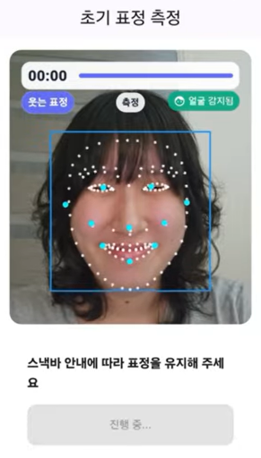
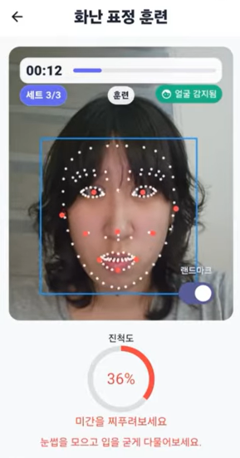
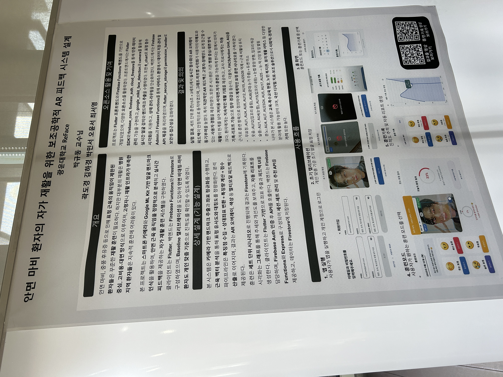

문제 정의
안면 마비 환자의 반복 재활 접근성 문제를 보조공학 관점에서 정의했습니다.
Activity 03 · Assistive Technology
안면 마비 환자가 스마트폰 카메라로 집에서도 표정 재활을 반복할 수 있도록, 얼굴 랜드마크와 AR 피드백을 활용해 설계한 보조공학 기반 자가 재활 시스템입니다.
Helping Others through Practical Engineering

Project Journey
ReFace는 아이디어 제안에서 끝나지 않고 수행계획서 작성, 프로토타입 화면 설계, 경진대회 발표, 교육 컨퍼런스 발표자료 제작까지 이어졌습니다. 핵심은 얼굴 인식 기술을 재활 피드백으로 바꾸고, 다시 중·고등학생이 체험할 수 있는 교육 콘텐츠로 확장한 점입니다.

안면 마비 환자의 반복 재활 접근성 문제를 보조공학 관점에서 정의했습니다.
초기 측정, 훈련 모드, 기록 확인까지 이어지는 사용자 워크플로우를 구체화했습니다.
얼굴 인식 기술을 AI 리터러시와 공학 탐구 활동으로 연결했습니다.
Problem & Motivation
안면 마비나 중풍 후유증으로 표정 근육 움직임이 제한된 사용자는 꾸준한 훈련이 필요하지만, 대면 중심·고비용 구조의 재활은 거동이 불편한 사용자나 재활 인프라가 부족한 지역에서 지속하기 어렵습니다.
전문가가 있는 공간에서는 피드백을 받을 수 있지만, 방문 비용과 이동 부담이 큽니다.
스마트폰 카메라로 표정을 측정하고, 기준 표정 대비 변화를 점수와 색상으로 확인합니다.
집에서 혼자 훈련하면 표정 움직임이 충분한지 판단하기 어렵습니다.
표정 근육 변화는 작아 거울만으로 개선 정도를 확인하기 어렵습니다.
반복 재활은 지루해질 수 있어 기록과 진척도 확인이 필요합니다.
Core Feature Overview
초기 기준 설정, 표정 훈련, 실시간 AR 피드백, 기록 확인이 하나의 재활 워크플로우로 이어지도록 설계했습니다.
눈, 코, 입꼬리, 턱 등 얼굴 주요 부위의 좌표를 실시간으로 추출합니다.
모든 사용자에게 동일한 정상 기준을 적용하지 않고 본인의 초기 표정을 기준으로 삼습니다.
웃음, 화남, 슬픔, 무표정처럼 표정별 목표를 나누어 반복 훈련합니다.
랜드마크, 색상, 점수로 움직임이 충분한지 즉시 알려줍니다.
날짜별 훈련 결과와 표정별 진척도를 그래프로 확인합니다.
초기 얼굴 상태와 표정별 기준값을 저장합니다.
사용자가 훈련할 표정을 고릅니다.
랜드마크와 진척도 점수로 표정 움직임을 확인합니다.
훈련 결과를 저장하고 그래프로 추세를 확인합니다.
User Workflow
이 프로젝트에서 중요한 근거는 사용자가 처음 앱을 켰을 때 어떤 순서로 기준 표정을 등록하고, 어떤 방식으로 훈련을 시작하며, 결과를 어떻게 확인하는지 명확히 설계했다는 점입니다.

Screen Flow
로그인, 회원가입, 초기 측정, 훈련 모드, 표정 선택, 훈련 기록, 그래프 확인, 초기화까지 실제 사용 화면 순서로 재활 경험을 배열했습니다.

초기 기준 측정을 먼저 수행해 사용자의 현재 얼굴 상태를 기준으로 평가합니다.
훈련 모드를 표정별로 분리해 사용자가 오늘의 훈련 목표를 쉽게 이해하도록 했습니다.
초기화 기능을 제공해 재활 상태 변화에 따라 기준 표정을 다시 측정할 수 있게 했습니다.
Technical Structure
카메라로 입력된 얼굴 영상을 Google ML Kit 기반 Face Detection으로 분석하고, 랜드마크 좌표와 표정 관련 확률값을 훈련 점수와 피드백으로 연결했습니다.
얼굴 이미지를 서버로 보내지 않고 기기 내에서 처리하는 구조를 전제로 빠른 반응성과 개인정보 보호를 고려했습니다.
눈, 코, 입꼬리, 입술, 턱 좌표를 추출해 표정 근육 움직임을 정량화합니다.
smilingProbability, eyeOpenProbability 같은 값을 표정 상태 판단에 활용합니다.
초기 표정과 현재 표정의 차이를 계산해 사용자별 상대 평가가 가능하게 합니다.
랜드마크, 색상 변화, 진행도 점수로 현재 움직임을 즉시 확인하게 합니다.
Feedback Algorithm
안면 마비 환자는 사용자마다 얼굴 비대칭 정도와 움직임 범위가 다릅니다. 그래서 ReFace는 일반적인 정상 얼굴 기준이 아니라, 사용자의 초기 기준 표정과 현재 표정의 차이를 중심으로 점수화합니다.

입꼬리 이동량, 눈 개방 확률, 좌우 비대칭 차이, 목표 움직임 달성률을 0~100점 진척도와 색상 피드백으로 변환합니다.
Education Extension Plan A
Plan A는 앱을 교구로 활용해 사회적 약자가 겪는 불편을 공학적으로 해결하는 탐구 활동입니다. 학생들은 얼굴 인식, 신호 변환, 기기 제어, 디지털 윤리를 하나의 프로젝트로 경험합니다.
손이나 발을 사용하기 어려운 상황에서 불편한 일을 찾고, 얼굴 인식 기술로 해결할 문제를 정의합니다.
오른쪽 눈 깜빡임은 클릭, 입 벌리기는 다음 곡 재생처럼 얼굴 움직임을 명령어로 설계합니다.
핵심 명령어 1~2개를 구현하고, 친구를 대상으로 성공률과 오작동 여부를 테스트합니다.
Education Extension Plan B
Plan B는 앱 자체를 놀이터로 활용하는 교육 전략입니다. 학생들은 표정 변화가 데이터로 변환되고, 그 데이터가 소리라는 출력으로 이어지는 과정을 직접 체험합니다.
얼굴 랜드마크 좌표를 보며 AI가 얼굴을 데이터로 인식하는 방식을 이해합니다.
rightEyeOpenProbability가 특정 임계값보다 작을 때 윙크로 판단합니다.
윙크는 드럼, 입 벌리기는 베이스처럼 조건문과 소리 출력을 연결합니다.
미소, 눈 깜빡임, 입 벌리기를 악기와 매핑하고 친구들과 합주합니다.
Classroom Application
중·고등학생 대상 창의적 체험활동, 동아리, 정보 교과, 융합 수업에서 활용할 수 있도록 3~4인 팀 기반 프로젝트 수업과 수준별 난이도 구조를 제안했습니다.

블록 코딩 또는 웹 데모에서 조건값을 조정하며 얼굴 인식 원리를 체험합니다.
Python 또는 JavaScript 예제를 활용해 임계값과 조건문을 직접 수정합니다.
Flutter와 ML Kit 샘플을 활용해 이벤트 매핑과 앱 기능을 직접 구현합니다.
Demo Video
영상에는 초기 표정 측정, 훈련 모드 선택, 표정 인식 기반 피드백, 훈련 기록 확인 흐름이 포함되어 있습니다.
Result
ReFace는 안면 마비 환자의 표정 재활을 돕기 위한 AR 피드백 시스템으로 기획되었고, 얼굴 랜드마크 추출, 개인 맞춤 기준 표정 설정, 실시간 피드백, 기록 및 그래프 시각화 흐름을 중심으로 설계되었습니다.
기술을 단순 기능 구현에 그치지 않고, 사회적 약자의 재활 문제를 해결하는 보조공학적 도구로 설계했습니다. 또한 얼굴 인식 기술을 교육 콘텐츠로 확장해 AI 리터러시와 공학적 문제 해결 과정을 체험할 수 있게 했습니다.
사용자의 신체적 한계와 재활 환경을 고려한 화면 흐름 설계의 중요성을 배웠습니다. 얼굴 인식 기술이 재활, 접근성, 교육으로 확장될 수 있는 사회적 기술이라는 점도 경험했습니다.